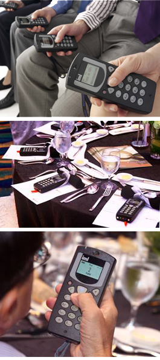

Advanced Audience Response Voting

Our IML Voting Communicator, IML Audience Response, IML Polling & IML Text interactive devices have proven software for a diverse range of events.
This reliable and unique state of the art technology audience response system offers presenters, auctioneers, organisers and hosts of any event or conference the ability to interact with their audience easily. Whether it is an electronic voting system in a conference or a silent auction taking place at a fundraising event, audience participation is essential and this is where an audience response system can make a big difference.
In addition, conference sessions can benefit from this electronic response system, for example, by letting audience members use their voting device as a hand held microphone to talk to the presenter and their fellow audience members, or text responses to a moderator who can then ask questions of the panel.
Other unique capabilities
VIEWS FROM OUR CLIENT
I was pleased with the professional services and responsiveness from Congress Rental. Their producer, Joan, guided us on how we could use the system right from the preparation stage. On both days of the event, they arrived ahead of schedule and set-up and integrated their audience response system seamlessly with our appointed AV vendor. The event went smoothly and I would recommend them to anyone who is planning to use audience response system for an event.
Andrea Han - Assistant Vice President Marketing Services, OCBC